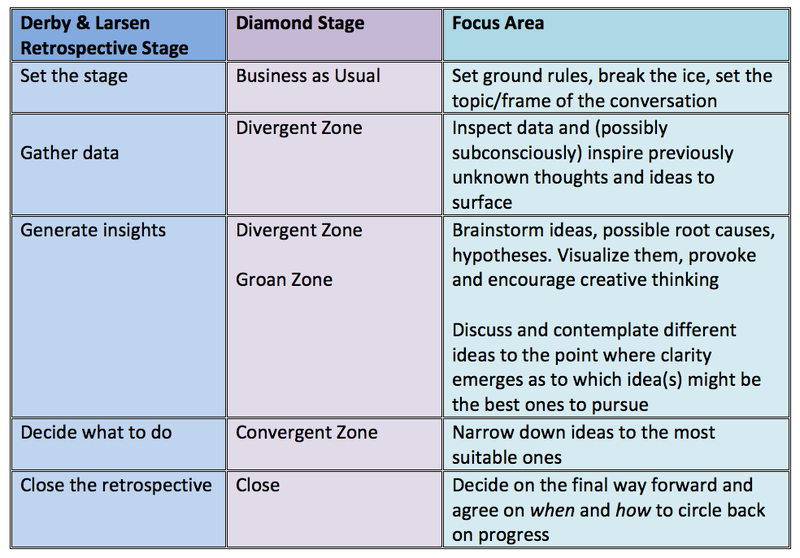

How to facilitate group decision-making
Aldric Giacomoni
Created: 2019-07-17 Wed 12:11
TLDS: read this book

Outline
- Framework for group decision-making
- Example: a retrospective
- Role of facilitator
Problem statement
We're in a state of constant discovery. We act creatively.
Sometimes we must act creatively as a group.
The creative process

A framework for thinking about group decision-making
- values we uphold
- types of conversations
Values
- Full Participation
- Mutual Understanding
- Inclusive Solution
- Shared Responsibilities
The framework

Groan zone™
A time to align and to allow group-based ideas to emerge
Each step takes as long as it needs to
Trying to shorten or skip a step can cause participants to disconnect and stop sharing responsibility for success
Participatory means anyone can call for closure, must get group agreement to move forward.
You can make steps more effective by choosing the appropriate exercise
Exercise examples
Ways to list ideas
- brainstorming
- multi-topic, multi-station
Structured go-arounds
- Toss the beanbag
- Seven words or less
Reframing
- reversing assumptions
- catastrophizing
Applications of the diamond
Stand-up
Retro

Idea density in process

Sustainable agreements

A familiar example: a retrospective
- Event generation
- Finding themes
- Choosing topic
- Exploring conditions
- Making decisions
Event generation
- divergent
- usual exercise: individual writing
Finding themes
- convergent
- usual exercise: affinity mapping
Choosing topic
- convergent
- usual exercise: dot-voting
Exploring conditions
- emergent
- usual exercise: mind-map
Making decisions
- convergent
- usual exercise: action item generation
The role of facilitator
Help the group get to its goal
Get a Facilitator's hat
It doesn't have to be a hat.
You are not a part of the conversation.
You're here to hold space
Everyone in the group needs to be comfortable with participating.
This is on YOU.
Okay but concretely?
- Manage the tensions of the conversations
- Be cognizant of the time
- Give only as much information as you need to
- Allow everyone to be involved
- Be ready for emotions to surface
- Allow the group to come to its own decisions
In summary
- Framework for group decision-making
- Example: a retrospective
- Role of facilitator
Other things the book covers
- making agendas
- breaking into small groups
- classic facilitator challenges, e.g. highly verbal team members, distractions, goofing around
- making sustainable agreements
- working through the groan zone
- making clear decision rules
Q&A Time

kkthxbai
Happy to facilitate conversations!
Happy to teach / mentor on how to facilitate conversations!
Send flames to /dev/null